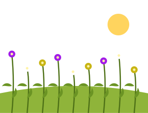
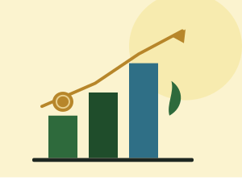
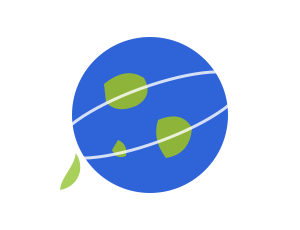
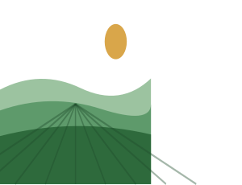

МонографіяНаукові основи формування фітоценозів агроекосистем в умовах змін…
Монографія · 2026
Наукові основи формування фітоценозів агроекосистем в умовах змін клімату
Ткач Є.Д., Шерстобоєва О.В., Стародуб В.І., Бунас А.А.

Ковалів О.І. та ін.
Анотація видання завантажується з картки на діючому сайті. У макеті показано місце для короткого опису: актуальність теми, об’єкт і методи дослідження, основні результати та коло читачів, для яких призначено працю.

Ткач Є.Д., Шерстобоєва О.В., Стародуб В.І., Бунас А.А.

Коніщук В.В., Шумигай І.В., Душко П.М., Мартиненко В.В.
ДІА, Київ · 319 с.
Ткач Є.Д., Шерстобоєва О.В., Стародуб В.І., Шавріна В.І., Охріменко С.Г.
ДІА, Київ · 335 с.Дребот О.І., Олійник Г.Б.
Аграрна наука, Київ · 260 с.